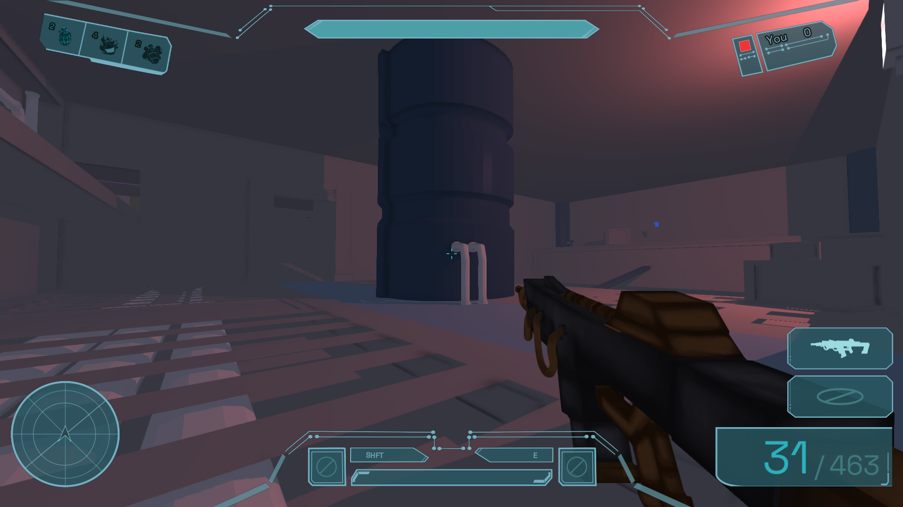

Mission_Summary
After 10 long yet short weeks, group 2's sprint has come to an end! It was so much fun working on such an ambitious project with the awesome people of group 2. To wrap up the quarter, here is our final report and retrospective.
Metal: Orbital Arena // Project review and course retrospective
Mission_Summary
After 10 long yet short weeks, group 2's sprint has come to an end! It was so much fun working on such an ambitious project with the awesome people of group 2. To wrap up the quarter, here is our final report and retrospective.
Source_Lines
74K+ C++, headers, GLSL counted with tokeiCore_Language
C++ SDL, EnTT, Dear ImGui, custom systemsGitHub_Commits
1,580+ 220+ closed pull requests.Question_01
We originally planned to have the gravity flip ability be a core feature of the game, but as we began designing the map we realized it would be hard to center the map around this feature. Instead, we decided to create an ability system and include the gravity flip as an ability.
Question_02
The gameplay evolved with the addition of things like abilities, powerups, and grenades. The movement, however, stayed mostly true to the vision we had for it. We were able to create a bunnyhop and wallrun system that is incredibly satisfying.
Question_03
We more or less followed the schedule. There were several delays due to refactors of some systems, and we could not finish all the assets we wanted for the game in time.

Question_04
We used cmake, ninja, doxygen, SDL. Build workflow is cmake preset and build. SDL supports all platforms, but there are different constraints for graphics for different backends (Metal vs Vulkan vs DX12). Individual CI pipelines for MacOS, Linux, and Windows.
Question_05
[Jacob] We had two people in charge of each category. I think this worked out well because it meant we always had at least one person present who could represent that part of the project. Our consensus system for decision making did not work too well. At times it became hard to get opinions from the group, which resulted in me making decisions for the team. One thing that I should have done was go to each person on the team individually and give them a chance to voice their concerns to me. I kinda just trusted that if anyone had any concerns they would just come forward with them, but that didnt always happen.
Question_06
[Jacob] We decided to use the ECS library EnTT, which made game state management incredibly easy for us. It still took time to walk through and implement each gameplay component, but the state management was always a breeze.
Question_07
[Jacob] I am proud of how well the guns turned out. They are really fun to use. I worked on a lot of the backend for the guns, Jolina made the models, and my brother helped with the sounds. All of these came together to make the guns feel good to use.
[Cedric] I am proud of setting up the self-hosting system. I got to revisit concepts from CSE 120 and 123 and see how I could apply them. I’m also proud of seeing how we went from having basic shooter mechanics to a fleshed out game loop.
[Jolina] I’m proud of the progress achieved with the map layout, seeing it go from grey boxes to more detailed rooms with working colliders was pretty rewarding.
Question_08
[Cedric] Refactoring the client to decouple networking from ECS. Originally, the client required the registry to be passed into the poll to apply snapshot bytes directly into components. When we added menus, they needed the same Client to receive match state and lobby events, but had no registry to pass. Instead of overloading poll, we opted to use a pub/sub pattern. The client exposed callbacks for certain packet types, which let menus and the game loop register the actions they needed while the client focused on transport and routing.
[Jacob] Architecting the initial structure for the game server and its event handling was quite tricky. I had never worked on a project like this before, so it took some time to find the best approach for us.
Question_09
[Jolina] We used Blender for both modeling and texture painting in the end. At a later point into the project, there was an attempt to pivot to Adobe’s Substance Painter for texturing the map, however we ran into an issue with some triangles of the uv mesh imported from Blender to Substance Painter being too small to be rendered into view, leaving holes in the imported model. Something I’d recommend to someone working with a map layout like ours is to texture room by room and keeping the faces of the mesh as separate from one another as possible so that it’s easier to choose which ones to join together to apply vertex paint to later on. Vertex painting is helpful if you’re using Substance Painter because it automatically creates a mask for each part that is colored different, so that you don’t accidentally paint over parts of the object you don’t want to. Despite the issues we faced with it, I think Substance Painter is still worth looking into if possible. As for Blender, it’s a reliable software for 3D modeling, and if it’s something you’re planning to use I’d recommend getting familiar with the keyboard shortcuts. As for using it to texture paint, it’s pretty limited so I mostly relied on shader nodes to generate texture in the models. Make sure to test out exporting and re-importing the model to make sure the colors/textures look correct because an issue we had early on was the inability to export a translucent mesh from blender.
One major lesson was to record the process for one asset and repeat it consistently for all assets, because coordinate spaces are inconsistent between editors and manual in-game adjustments are annoying.
Question_10
[Cedric] We used Dear ImGui for our GUI. It helped us wire up simple interfaces early, and later we created a separate class for visual presets similar to a CSS file. Overall, I would highly recommend ImGui for quickly integrating and iterating on UI.
[Cedric] SDL Net was useful for providing a cross-platform socket interface. I would recommend it for multi-platform support, though during development there was no official 3.x release and I had to update the interface to support NODELAY and return port numbers.
[Daniil] Physics and collisions were made by us, without libraries. It would have been easier to work with collisions if we used brushes like cubes in Blender instead of planes.
[Daniil] Networking was essentially made from scratch, using SDL Net for platform-agnostic socket access. We started with TCP-based networking, then built UDP-based networking so the game could handle latency jitter and lag compensation properly.
Question_11
[Cedric] I used Claude Code and Codex for planning features, styling UI, and fixing bugs. It was a massive time saver because it could scan the codebase and determine what needed to be created, modified, or wired. For UI, it helps to have a clear visual idea in mind, because LLMs are better at functional interfaces than visually appealing ones. Be specific and concise with prompts, and learn to minimize token usage.
[Daniil] I used Claude Code in various harnesses, GPT Codex, and other open source models. They were beneficial for the amount of work we could do in limited time, but you need to fully specify API, architecture, and behavior in detail. Do preliminary research before formulating a task. LLMs are not suitable for artwork yet.
[Scott] I used standard Claude Code when needed. It was especially useful for quickly summarizing changes in parts of the codebase I had not been tracking closely, and for implementing bug fixes near the deadline without scanning very long files.
[Jacob] I used Codex for summarizing changes, helping plan architectural decisions, and helping arrange the HUD elements. I think it was very helpful, especially given how large our code base ended up being. However, I started the quarter telling myself that I would not rely on it too much, but by the last week I found myself using it a lot. I think the use of AI by others incentivises you to use AI to keep up with the amount of work they complete. I recommend that future students create strong boundaries for what is and is not permitted with AI.
Question_12
We used C++. Many of us used CLion as an IDE, which provided a super efficient working environment.
Question_13
In total, we have 55k lines of C++, 15k lines of C++ headers, and 4k lines of GLSL files, which is about 74,000 lines total. We counted with tokei. The repository has 85,000 lines including the other languages.
Question_14
[Josh] Plan hard, plan soft. Plan the core game engine features solidly, but keep the game flexible throughout. Ideally have your artist and graphics people work closely together or be the same person. You don’t need to implement realtime shadows and glossy materials if your art is not going to be able to take advantage of it. Once you get to implementing the game and all the core game engine components are in, then flexibility and fun can take over. But for ease of implementation, the more you can plan out the better. How are things going to be organized, what are the large systems we are going to have and what are their interfaces. For example, actually sit down and plan out how the renderer is going to connect to the game loop. There is just going to be one “render” method to call. Nice! But how are you going to pass over the updated game objects to the renderer every frame? Will it be the responsibility of the game loop to send that information to the renderer every frame or will it be the responsibility of the renderer to iterate through all the renderable objects and get their updated information. Another example, the loading of assets, who is in charge of what? Okay, the renderer can load player models, but what about the map and everything that has collisions. Should that be the render system? Physics? Or a whole system just for loading that all the other systems tap into? These are the things you should “plan hard” so work isn’t doubled up and confusion can be avoided.
[Jolina] Communication is definitely crucial, particularly about what is feasible and what isn’t within the provided scope of the class. Establishing file formats (glb vs fbx vs obj) for exporting assets, early on and testing to make sure it works in game is probably a good idea. Spending sometime as a team to establish the theme for the game will also help with asset later down the road. In summary, having a solid plan to build on will help.
[Cedric] Get to know your team and be comfortable working with them early on. I noticed we could iterate on features a lot quicker once we knew each other better. I felt like I was able to get a better sense of how the game worked and what people were expecting when I felt more comfortable with the team.
Question_15
[Cedric] If we had a situation where one person vibe-coded an entire section and other people wanted more ownership, I would get rid of the vibe-coded section entirely. This is a group project that people may want to show off, and people should feel proud of the code they wrote. I also wish we had a uniform place to manage tasks. Keeping a running list on Discord was useful, but it became hard to know who was currently implementing a feature or who had already finished one during crunch time.
[Jolina] For art specifically, figuring out a more concrete overarching timeline along with the weekly milestones, to help get a better idea of what the MVP for art looks like. The other thing I think I would have done differently was the testing of textures in the actual game itself because the default lighting of the blender scenes differed quite a bit from that of the actual game. I think spending some time to replicate the game’s lighting in the texture painting software you’re using, if possible, would be helpful for producing the most accurate results.
[Josh] I think I would just change the initial planning and set more concrete plans for the game engine part of the project. With a solid engine, you can always build a good game on top. There was a point where we diverged on a major system of the game engine and I think that wasn’t a good move. It was much harder to reintegrate one of the branches than it would have been if we wrote that system from scratch in parallel with everything else rather than as its own thing.
Question_16
[Cedric] CSE 120, 122, and 124. CSE 120 was useful for systems knowledge like threads, processes, and forking. CSE 124 helped with tailoring application payloads. CSE 122 helped apply networking knowledge to real systems, especially when setting up the echo servers for this class.
[Scott] CSE 120 and CSE 124 were useful for general systems background knowledge, and CSE 110 was good experience for working with larger groups.
[Jacob] CSE 120 and 124 provided knowledge for navigating systems and distributed applications.
[Jolina] VIS 134 was helpful for both hard surface and organic 3D modeling.
[Josh] CSE 167 probably? Honestly only applied concepts from there rather than actual things we did in the class. Other than that I think it was simple documentation reading and programming which depending on how you look at it either no class or every class prepares you for.
Question_17
[Jacob] I learned that group dynamics can be tricky. The more structure you define for the group's workflow in the beginning, the less trouble you will have later on. I also learned that AI is incredibly powerful but, in many cases, is a trap that can ultimatly lead to a sub-par result.
[Josh] frioendship
[Cedric] Rome wasn’t built in a day. Having a good foundation for your group dynamic and codebase management goes a long way to being successful. If you do not do it early, it will come back to haunt you as your finishing. Also prompt engineering and context management.
Question_18
It was super fun! It was a great opportunity to play the other groups' finished games. It definitly needs to be done next year.
I think it was fine. It worked out cause I was more hungry than anything.
Question_19
Make sure the gameplay is paced with the art, otherwise the work you do might not end up showcased or used.
As a group, hard define rules for AI usage. In my opinion, the less allowed the better your overall experience will be.
Question_20
I would recommend banning the use of AI agents. Agents open up the door for you to be less involved in the actual code, reducing the challenge and the amount you actually learn about distributed systems.
Question_21
This was a super fun class, I had a blast! And to all the future students reading this, make sure you are having fun at the end of the day.